/math-28e6ed2438f8ba9a554b7c2c5bfdcbbb.png "\rho _{x,y}=\frac{cov(X,Y)}{\sigma _x\sigma _y}=\frac{E((X-E(X))(Y-E(Y)))}{\sigma _x\sigma _y}")
異なる環境下で使用するのに適した係数が数多くあります。その中で、最も頻繁に使われるのは、ピアソンの積率相関係数です。
ピアソンの積率相関係数
ピアソンの積率相関係数は、2つの変数間の線形の関係を測定するものです。
および をそれぞれ2つの変数 X および Y の標準偏差とします。そのとき、変数間のピアソンの積率相関係数は、次式で求められます。
ここで E(?) は変量の期待値、cov(?) は共分散を表しています。
この方法を使うには、区間データは観測データから求められ、変数は正規分布に従うものとします。結果に影響を及ぼすことが多いので、データには極値は含まれません。ピアソンの積率相関係数は、変数に非線形の関係がある場合、誤解を招くような小さい値になることがあります。
スピアマンの順位相関係数
スピアマンの順位相関係数はノンパラメトリックであるため、正規分布に従わないデータに適しています。2変数間に非線形の関係が認められる場合に良い結果となります。これは次式のように定義できます。
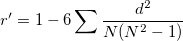
ここで、 d は、対応する変数の統計上の順位の差です。
統計上の順位は、リスト内の値の序数であるため、スピアマンの順位相関係数は、変数の実際の値が不明な場合でも計算することができます。
ケンドールの相関係数
ケンドールの相関係数または ケンドール のタウは、その前提と統計的な検出力の点ではスピアマンの順位相関と同じです。しかし、ケンドールの相関係数には、直感的に説明できる点があります。そして、その代数構造はより単純です。さらに、計算を実行する前にデータの順序を必要としません。
ケンドール の相関係数は次式で計算されます。
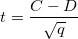
ここでCは、一致する対のデータ (同じ符号を持つ対の観測値)の数で、Dは、 一致しない対のデータ (異なる符号を持つ対の観測値)の数です。
ピアソンとスピアマンの相関では、次のように定義します。
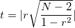
ここで、rは2つの変数の相関で、Nは観測値の数です。
tはN-2の自由度を元にしたt分布に基づきます。両端の有意水準レベルは以下のように計算されます。
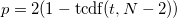
ケンドールの相関では次のように定義します。
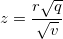
ここで
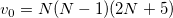
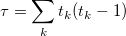
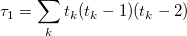
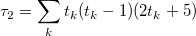
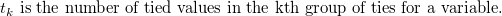
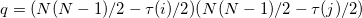
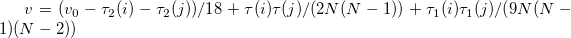
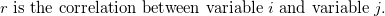
Zは標準正規分布から近似値を求められます。両端の有意水準レベルは次のようになります。
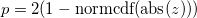